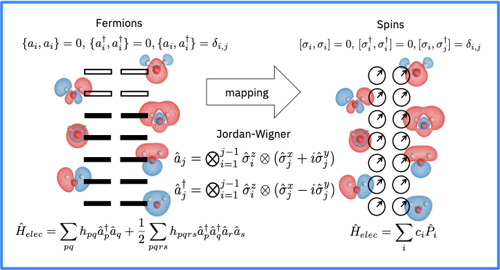

참고
이 페이지는 docs/tutorials/01_electronic_structure.ipynb 에서 생성되었다.
전자 구조¶
소개¶
분자 해밀톤은
핵들은 동일한 시간 축척으로 이동하지 않는 전자들보다 훨씬 더 무거운 것이기 때문에, 핵들 및 전자들의 거동은 분리될 수 있다. 이것은 Born-Oppenheimer 근사치이다.
그러므로, 핵 좌표를 매개 변수로만 입력하는 전자 문제를 먼저 다룰 수 있다. 분자 내의 전자의 에너지 수준은 비-상대성의 시간 독립적인 Schrodinger 방정식을 해결함으로써 발견될 수 있다.
여기서
특히, 바닥 상태 에너지는 다음과 같다:
여기서 \(\Psi_0\) 는 시스템의 바닥 상태이다.
그러나, 이 문제의 차원은 자유도의 수에 따라 기하급수적으로 증가한다. 이러한 문제를 해결하기 위해 우리는 양자 컴퓨터에 \(\Psi_0\) 을 준비하고 Hamiltonian 기대값 (또는 \(E_0\)) 을 직접 측정하고자 한다.
그러면 어떻게 구체적으로 표현할 수 있을까?
Hartree-Fock 초기 상태¶
이 문제를 해결하기 위한 좋은 출발점은 HF (Hartree-Fock)방식이다. 이 방법은 다체 문제를, 각각의 전자가 다른 것들의 평균-장에서 진화하는 N개의 일체 문제 (one-body problem)로 근사화한다. HF 방정식을 고전적으로 해결하는 것은 효율적이며 정확한 교환 에너지를 유도하지만 어떠한 전자 상관관계도 포함하지 않는다. 따라서 일반적으로 상관관계 추가를 시작하는 것이 좋은 출발점이다.
이어서, Hamiltonian은 또한 분자 오비탈 (Molecular Orbitals, MOs)이라고도 불리는 HF 방법의 풀이에 기초하여 다시 표현될 수 있다.
일체 적분은 다음과 같고,
이체 적분은 다음과 같다
MOs (\(\phi_u\))는 점유되거나 가상 (점유되지 않은, 비어있는)의 오비탈이 될 수 있다. 하나의 MO는 두 개의 전자를 포함할 수 있다. 그러나 스핀 다운 (\(\beta\))전자의 스핀 업 (\(\alpha\))과 연관된 스핀오비탈 (Spin Orbitals)과 실제로 작업하는 것은 다음과 같다. 따라서, 스핀오비탈은 하나의 전자를 포함하거나 비어있을 수 있다.
이제 Qiskit 으로 이러한 단계를 구체화하는 방법을 설명한다.
Qiskit은 HF 솔루션을 찾을 수 있는 다양한 고전 코드와 호환된다. Qiskit과 호환되는 사용가능한 코드는 다음과 같다: * Gaussian* Psi4* PyQuante* PySCF
다음은 수소 분자를 전하가 없는 단일항 상태(singlet state)의 평형 결합 길이 (0.735 옹스트롬)에 두기 위해 PySCF 드라이버를 설정한다.
[1]:
from qiskit_nature.drivers import UnitsType, Molecule
from qiskit_nature.drivers.second_quantization import ElectronicStructureDriverType, ElectronicStructureMoleculeDriver
molecule = Molecule(geometry=[['H', [0., 0., 0.]],
['H', [0., 0., 0.735]]],
charge=0, multiplicity=1)
driver = ElectronicStructureMoleculeDriver(molecule, basis='sto3g', driver_type=ElectronicStructureDriverType.PYSCF)
Couldn't find cython becke routine
/Users/manoel/opt/anaconda3/envs/Qiskitenv/lib/python3.8/site-packages/pyscf/lib/misc.py:46: H5pyDeprecationWarning: Using default_file_mode other than 'r' is deprecated. Pass the mode to h5py.File() instead.
h5py.get_config().default_file_mode = 'a'
드라이버에 대한 자세한 정보는 https://qiskit.org/documentation/nature/apidocs/qiskit_nature.drivers.second_quantization.html 를 참조하라
페르미온(fermions) 에서 큐비트로의 mapping¶

이전 섹션에서 다룬 Hamiltonian은 페르미온 연산자의 관점에서 표현된다. 문제를 양자 컴퓨터의 상태로 인코딩하기 위해, 이 연산자들은 스핀 연산자에 mapping되어야 한다 (실제로 큐비트는 스핀 통계를 따른다).
다른 특성을 가진 다른 mapping 유형이 있다. Qiskit은 이미 다음과 같은 mapping을 지원한다: * The Jordan-Wigner ‘jordan_wigner’ mapping (über das paulische äquivalenzverbot. In The Collected Works of Eugene Paul Wigner (pp. 109-129). Springer, Berlin, Heidelberg (1993)). * The Parity ‘parity’ (The Journal of chemical physics, 137(22), 224109 (2012)) * The Bravyi-Kitaev ‘bravyi_kitaev’ (Annals of Physics, 298(1), 210-226 (2002))
조단 위그너 사상은 (위 그림처럼) 각 스핀 오비탈을 큐비트로 대응시킨다는 점에서 특히 흥미롭다.
여기서는 Electronic Structure Problem (전자 구조 문제)를 설정하여 두 번째 양자화된 연산자와 이를 큐비트 연산자에 mapping할 큐비트 변환기를 생성한다.
[2]:
from qiskit_nature.problems.second_quantization import ElectronicStructureProblem
from qiskit_nature.converters.second_quantization import QubitConverter
from qiskit_nature.mappers.second_quantization import JordanWignerMapper, ParityMapper
[3]:
es_problem = ElectronicStructureProblem(driver)
second_q_op = es_problem.second_q_ops()
print(second_q_op[0])
+-+- * (0.18093119978423117+0j)
+ +--+ * (-0.18093119978423128+0j)
+ -++- * (-0.18093119978423128+0j)
+ -+-+ * (0.18093119978423136+0j)
+ IIIN * (-0.4718960072811401+0j)
+ IINI * (-1.2563390730032502+0j)
+ IINN * (0.4836505304710652+0j)
+ INII * (-0.4718960072811401+0j)
+ ININ * (0.6985737227320179+0j)
+ INNI * (0.6645817302552963+0j)
+ NIII * (-1.2563390730032502+0j)
+ NIIN * (0.6645817302552963+0j)
+ NINI * (0.6757101548035165+0j)
+ NNII * (0.4836505304710652+0j)
만약 위처럼 주어진 드라이버로 Hamiltonian을 변환한다면 큐비트 연산자를 얻을 수 있다.
[4]:
qubit_converter = QubitConverter(mapper=JordanWignerMapper())
qubit_op = qubit_converter.convert(second_q_op[0])
print(qubit_op)
-0.8105479805373259 * IIII
- 0.2257534922240248 * ZIII
+ 0.17218393261915566 * IZII
+ 0.1209126326177663 * ZZII
- 0.2257534922240248 * IIZI
+ 0.17464343068300447 * ZIZI
+ 0.16614543256382408 * IZZI
+ 0.17218393261915566 * IIIZ
+ 0.16614543256382408 * ZIIZ
+ 0.16892753870087912 * IZIZ
+ 0.1209126326177663 * IIZZ
+ 0.04523279994605782 * XXXX
+ 0.04523279994605782 * YYXX
+ 0.04523279994605782 * XXYY
+ 0.04523279994605782 * YYYY
최소 (STO-3G) 기준으로 네 개의 큐비트가 필요하다. Mapping에서 발생하는 알려진 대칭을 이용하여 두 개의 큐비트를 제거할 수 있는 Parity mapping을 사용하여 큐비트의 수를 줄일 수 있습니다.
[5]:
qubit_converter = QubitConverter(mapper = ParityMapper(), two_qubit_reduction=True)
qubit_op = qubit_converter.convert(second_q_op[0], num_particles=es_problem.num_particles)
print(qubit_op)
(-1.052373245772858+5.551115123125783e-17j) * II
+ (-0.39793742484318034+1.3877787807814457e-17j) * ZI
+ (0.3979374248431804-2.7755575615628914e-17j) * IZ
+ (-0.011280104256235449-1.3877787807814457e-17j) * ZZ
+ (0.18093119978423114-3.469446951953614e-18j) * XX
이번에는 두 개의 큐비트가 필요하다.
이제 Hamiltonian이 준비되었으므로, 이는 특정 분자에 대응하는 전자 구조에 대한 정보를 찾는 양자 알고리즘에 사용될 수 있다. Qiskit에서 이를 수행하는 방법에 대해 자세히 알아보려면 바닥 상태 계산(Ground State Calculation)과 여기 상태 계산(Excited States Calculation)에 대한 튜토리얼을 참조하자.
[6]:
import qiskit.tools.jupyter
%qiskit_version_table
%qiskit_copyright
Version Information
| Qiskit Software | Version |
|---|---|
qiskit-terra | 0.19.0.dev0+105cba3 |
qiskit-aer | 0.9.0 |
qiskit-ignis | 0.7.0.dev0+9201ed8 |
qiskit-nature | 0.2.0 |
qiskit-finance | 0.3.0 |
qiskit-optimization | 0.3.0 |
qiskit-machine-learning | 0.3.0 |
| System information | |
| Python | 3.8.10 (default, May 19 2021, 11:01:55) [Clang 10.0.0 ] |
| OS | Darwin |
| CPUs | 2 |
| Memory (Gb) | 12.0 |
| Mon Jul 26 13:45:29 2021 EDT | |
This code is a part of Qiskit
© Copyright IBM 2017, 2021.
This code is licensed under the Apache License, Version 2.0. You may
obtain a copy of this license in the LICENSE.txt file in the root directory
of this source tree or at http://www.apache.org/licenses/LICENSE-2.0.
Any modifications or derivative works of this code must retain this
copyright notice, and modified files need to carry a notice indicating
that they have been altered from the originals.